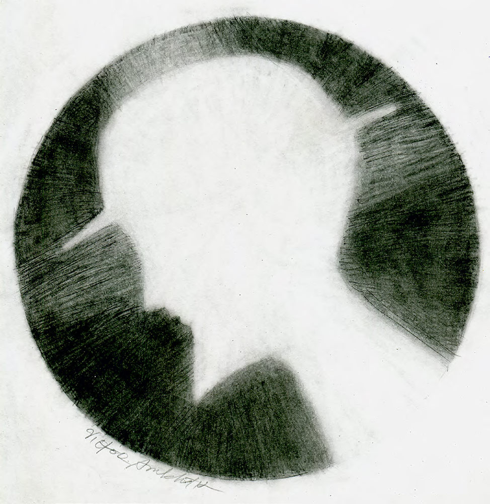
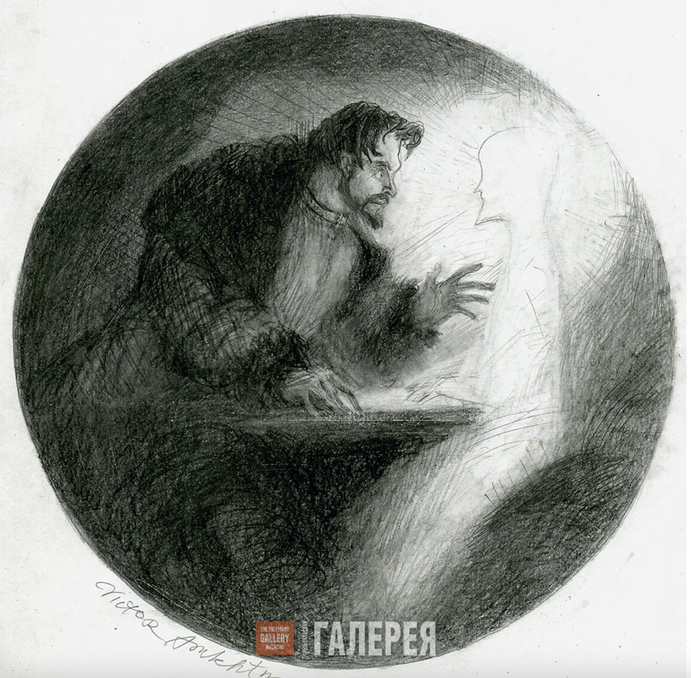

| Illustration | Description |
|---|---|
|  |
Lev Myshkin
artist Viktor Apukhtin (2017) pencil on paper. 21 x 29 cm "The Idiot” was written on the theme of a line from the Gospel of John (chapter 1, verse 10) “He was in the world, and the world was made by Him, and the world knew Him not.” |
|  |
In the third class compartment
Artist Apukhtin (2017) |